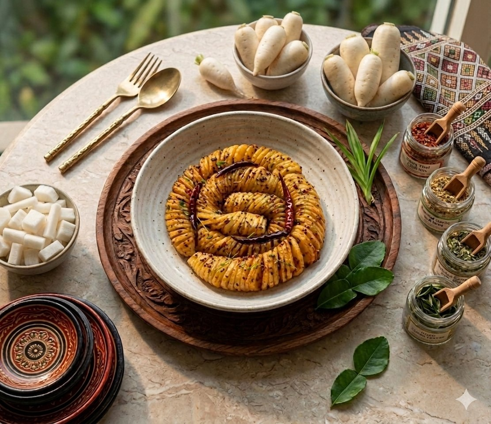

ထားဝယ်ရိုးရာ မုန်လာဥပိုးတီကောင် (သို့မဟုတ်) ပိုးတီသနပ် သည် ထားဝယ်ဒေသထွက် ပအုန်းရည်ဖြင့် စိမ်ထားသော၊ ချဉ်ချဉ်စပ်စပ်နှင့် ကျွတ်ကျွတ်ရွရွရှိသည့် နာမည်ကြီး ရိုးရာအစားအစာတစ်မျိုး ဖြစ်သည်။ပိုးတီကောင် ပုံသဏ္ဌာန်ရအောင် မုန်လာဥကို လှီးဖြတ်နည်းနှင့် လုပ်ဆောင်ရမည့် အဆင့်ဆင့်ကို အောက်တွင် ဖော်ပြပေးလိုက်ပါသည်။
မုန်လာဥကို ပိုးတီကောင် (ကျိုင်းကောင်) ပုံစံ တွန့်တွန့်လေးဖြစ်အောင် လှီးရန် အထူးအရေးကြီးပါသည်။မုန်လာဥကို အခွံခွာ၊ ရေဆေးပြီး အဝိုင်းပြား ခပ်ထူထူ လှီး ပါ။မုန်လာဥတုံးကို ချထားပြီး ဓားကို ဘေးစောင်းစောင်းလေးဖြင့် တစ်ဖက်လုံးကို အဆုံးထိမပြတ်စေဘဲ စိပ်စိပ်လေး လှီးပေးပါ။ပြီးနောက် မုန်လာဥကို အခြားတစ်ဖက် သို့ လှန်လိုက်ပြီး ဓားကို မတ်မတ် (အတည့်) ဖြင့် အဆုံးထိမပြတ်စေဘဲ စိပ်စိပ်လေး ထပ်လှီးပါ။လှီးပြီးပါက မုန်လာဥသည် ပြတ်မသွားဘဲ ဆွဲလိုက်လျှင် ပိုးတီကောင်ကဲ့သို တွန့်တွန့်လေး ဖြစ်နေပါလိမ့်မည်။
လှီးထားသော မုန်လာဥများကို ဆားနယ်ပြီး မိနစ် ၃၀ ခန့် နှပ်ထားပါ။မုန်လာဥမှ ရေများ ထွက်လာပါက ရေကို စင်အောင် ညှစ်ထုတ်ပစ်ပါ (ဤသို့လုပ်ခြင်းဖြင့် မုန်လာဥကို ပိုမိုကျွတ်ရွစေပါသည်)။အငံဓာတ် မကဲစေရန် ရေဖြင့် 2ကြိမ် လောက်ဆေးပေးရပါမည်။
ရေဆေးထားသော မုန်လာဥကို ဇလုံတစ်ခုထဲတွင် ထားဝယ်ပအုန်းရည်ဖြင့် မိနစ်၃၀ လောက်နှပ်ထားပေးရပါမည်။ မိနစ် ၃၀ပြည့်လျှင် အချဥ်ဓာတ် မကဲအောင်
သေချာ ညှစ်ပီး ထားထားရပါမည်။၊
ပူနေသော အိုးထဲကို ဆီထည့်၍ ဆီပူလာလျှင် ငရုတ်သီးခြောက်ကို ထည့်ပေးပါ။ ငရုတ်သီးခြောက် အရောင်ပြောင်းသွားလျှင်
ပြန်ဆယ်ထားရပါမည်။
ငရုတ်သီးခြောက်၊ကြက်သွန်နီ နှင့် ကြက်သွန်ဖြူကို ညက်နေအောင် ထောင်းထားပါ။ငရုတ်သီးခြောက်ဆယ်ပြီး ကျန်နေသော ဆီပူထဲသို့ ထောင်းထားသော အနှစ်များကိုထည့်၍ မီးအေးအေးဖြင့် ဆီသတ်ပေးရပါမည်။
ပအုန်းရည်စိမ်ပြီး ညှစ်ထားသော မုန်လာဥများကို အသင့်ပြင်ထားသည့် ဆီကျက်အနှစ်ထဲသို ထည့်ပြီး ဇွန်းဖြင့် သမအောင် နယ်ပေးပါ။သမသွားလျှင် အရသာအတွက် ဆားအနည်းငယ်၊အချိုမှုန့်၊ အသားမှုန့်၊ သကြားအနည်းငယ်ကို ထည့်ပြီး အရသာနှံ့အောင်ကြော်ပေးရပါမည်။အရသာဝင်ပြီဆိုလျှင် အပေါ်ကနေ နှမ်း ဖြူးပေးရပါမည်။နှမ်းဖြူးပြီး နောက်ထပ် တစ်မိနစ်လောက် ဆက်ထားပေးပါ။၁မိနစ်ပြည့်ပြီဆိုပါက ဆီထဲ ထည့်ကြော်ထားသည့် ငရုတ်သီးခြောက်လေးများကို ပိုးတီကောင် အပေါ်မှာတင်ပေးလိုက်ပါ။ နောက်ဆုံး အရသာကောင်းသည့် မုန်လာဥ ပိုးတီကောင် ရရှိပါပြီ။ အနံ့ပိုမွှေးချင်လျှင် ရှောက်ရွက်များကို ပါးပါးလှီးပြီး အပေါ်တွင် တင်ပေးရပါမည်။